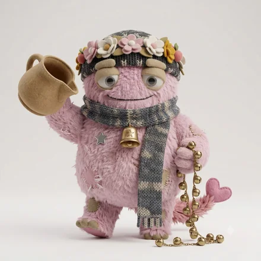

monster type
ESFJ-A-H場をひらくおもてなしモンスター
人の輪をつくり、居場所を整える人
モンスター名は、6軸の組み合わせにつけた分類名です。軸ごとの表現ではありません。
ESFJ-A-H とは
ESFJ-A-H（ESFJ-AH／ESFJ AH とも書かれます）は、64タイプ性格診断のうちの1つです。ESFJの4文字に、自分への確信を表すA（確信）と、人への構えを表すH（信頼）が重なります。64モンスターズでは「場をひらくおもてなしモンスター」と呼んでいます。
誰が浮いているか、誰が困っているかに敏感で、場を居心地よく保ちます。感謝や承認が原動力になり、期待に応えようと動きます。対立や無視されることに、強く傷つきます。
誰も居心地悪くならない場を、迷いなく作っていくタイプ。人を疑わず先に開くので、初対面同士でも自然につながっていきます。空気そのものを設計できますが、全員に目を配ろうとするため、気づくと自分だけがずっと働いています。
ESFJ-A-H はこんな人
実在の人物ではなく、よく見かける役割と場面で書いています。
- 初対面同士を、自然につないでしまう人
- 誰も居心地悪くならない場を、迷いなく作れる人
- 気づくと、自分だけがずっと働いている人
ESFJ-A-H あるある
- 全員に目を配ろうとして、自分の分の時間がない
- 人を疑わず先に開くので、距離が縮まるのが速い
- 場が静かになると、自分が何とかしようとする
- 楽しかったと言われることが、いちばんの報酬
- 片付けの最後まで残っている
当たっているかどうかは、実際に受けてみるのがいちばん早いです。
全部が当たるとは限りません。6軸の組み合わせから見た傾向です。
4つのサブタイプの中での位置
 ESFJ-A-C距離を測るおもてなしモンスター
ESFJ-A-C距離を測るおもてなしモンスター ESFJ-O-H気を回しすぎるおもてなしモンスター
ESFJ-O-H気を回しすぎるおもてなしモンスター ESFJ-O-C控えめなおもてなしモンスター
ESFJ-O-C控えめなおもてなしモンスター同じ基本タイプでも、自分への確信（A / O）と人への構え（H / C）で現れ方が変わります。
強みと、気をつけたいところ
ここは基本タイプ（ESFJ）に共通する性質です。
強み
- 人間関係の潤滑油として機能する
- 段取りとおもてなしが行き届く
- チームの実務を止めずに回す
気をつけたいところ
- 嫌われる恐れから、要求を飲みすぎる
- 評価や噂に振り回されやすい
- 異論を「和を乱すもの」と感じやすい
ESFJ-A-H ならでは
このタイプの強み
人と人のあいだを、意識せずに埋められる。この人がいる場は、はじめから壁が低くなります。
落とし穴
場を回すことに自分の時間を取られ、消耗する。ホスト役を誰かと分担すると、同じ質を保ったまま楽になります。
恋愛での ESFJ-A-H
相手が心地よくいられる場を作ります。会う日の段取りから帰り道まで、全部考えています。
かみ合う相手
用意されたことに気づける相手。楽しかったと言葉にする人となら、この人は満たされます。
気をつけたいところ
尽くした量に見合う言葉が返らないと、深く傷つく。ほしい言葉があるなら、先に言ってしまったほうが早いです。
仕事での適性
力を発揮する環境
チームで働き、人からの反応が返ってくる環境
向いている役割
チーム運営、顧客対応、社内調整、イベント
チームの空気そのものを設計できる。役割を明確にすると疲れにくい。
相性
恋人・仕事・友人で、噛み合う相手は変わります。6軸の重みづけから計算した順位です。数字は測定値ではありません。
恋人としてかみ合う相手
ESFJ-O-H気を回しすぎるおもてなしモンスター100 ENFJ-O-H気を配りすぎる伴走モンスター88
ENFJ-O-H気を配りすぎる伴走モンスター88 ISFJ-O-H気に病むお世話モンスター88ESFJ-A-H同じタイプ場をひらくおもてなしモンスター88
ISFJ-O-H気に病むお世話モンスター88ESFJ-A-H同じタイプ場をひらくおもてなしモンスター88 ESTJ-O-H根回しする仕切りモンスター81
ESTJ-O-H根回しする仕切りモンスター81この用途では「外界への構えが同じ」と「判断の基準が同じ」ことを最も重く見ています。
仕事のパートナーとして組みやすい相手
 INTJ-O-H問い直す設計モンスター100
INTJ-O-H問い直す設計モンスター100 ENTJ-O-H聞いてから決める推進モンスター93
ENTJ-O-H聞いてから決める推進モンスター93 INFJ-O-H揺れながら寄り添う洞察モンスター86
INFJ-O-H揺れながら寄り添う洞察モンスター86 INTJ-O-C沈潜する設計モンスター86ENFJ-O-H気を配りすぎる伴走モンスター79
INTJ-O-C沈潜する設計モンスター86ENFJ-O-H気を配りすぎる伴走モンスター79この用途では「情報の受け取り方が違う」と「外界への構えが同じ」ことを最も重く見ています。
友人として続きやすい相手
ESTJ-O-H根回しする仕切りモンスター100ESFJ-O-H気を回しすぎるおもてなしモンスター92 ESTJ-A-H面倒見のいい仕切りモンスター92
ESTJ-A-H面倒見のいい仕切りモンスター92 ESTP-O-H考えてから跳ぶ瞬発モンスター92ESFJ-A-H同じタイプ場をひらくおもてなしモンスター83
ESTP-O-H考えてから跳ぶ瞬発モンスター92ESFJ-A-H同じタイプ場をひらくおもてなしモンスター83この用途では「情報の受け取り方が同じ」と「エネルギーの向きが同じ」ことを最も重く見ています。
よくある質問
ESFJ-A-Hとはどんなタイプですか？
ESFJ-A-Hは「場をひらくおもてなしモンスター」です。人の輪をつくり、居場所を整える人というESFJの性質に、自分への確信がA（確信）、人への構えがH（信頼）の組み合わせが重なります。誰も居心地悪くならない場を、迷いなく作っていくタイプ。人を疑わず先に開くので、初対面同士でも自然につながっていきます。空気そのものを設計できますが、全員に目を配ろうとするため、気づくと自分だけがずっと働いています。
ESFJ-A-Hと相性がいいタイプは？
用途によって変わります。恋人として噛み合うのはESFJ-O-H、ENFJ-O-H、ISFJ-O-H、仕事のパートナーとしてはINTJ-O-H、ENTJ-O-H、INFJ-O-H、友人としてはESTJ-O-H、ESFJ-O-H、ESTJ-A-Hが上位です。6つの軸それぞれに「一致が効くか、違いが効くか」を用途別に重みづけして、64タイプを順位づけしています。同じタイプ同士も相手として数えています。
ESFJ-A-Hの「A」と「H」は何を表していますか？
Aは自分への確信の軸で、確信＝自分の判断を疑わず、迷いが短いという意味です。Hは人への構えの軸で、信頼＝まず信じて、自分から開いていくという意味です。同じESFJでも、この2文字が変わると現れ方が変わります。
ESFJ-A-Hは「ESFJ-AH」や「ESFJ AH」と同じですか？
同じものです。ESFJ-A-H・ESFJ-AH・ESFJ AH・ESFJ A H は、いずれも同じ組み合わせを指します。区切り方はサービスや記事によって異なります。
この診断は、回答時点での自己認識を6つの軸で整理したものです。人の性格は状況や時期によって変わります。
© 2026 WONDER BROTHERS INC. All rights reserved.